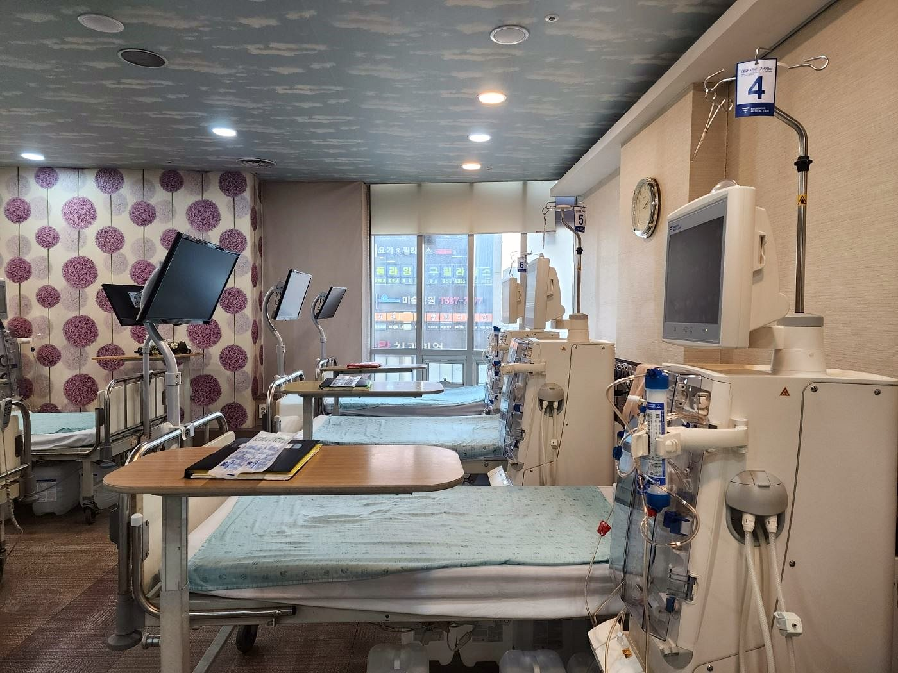

- 홈
- 신장내과
구리 신장내과 — 콩팥은 아프다고 말하지 않습니다.
검사로 먼저 확인하세요
만성콩팥병은 기능이 크게 떨어질 때까지 증상이 거의 없습니다.
조형도내과의원은 신장내과 전문의가 혈뇨·단백뇨·사구체여과율을 확인하고, 투석이 필요해지기 전 단계부터 진행을 늦추는 관리를 합니다.
핵심 요약
- 만성콩팥병은 콩팥 손상 또는 사구체여과율(eGFR) 60 미만이 3개월 이상 지속되는 상태로, 환자의 약 70%는 당뇨병과 고혈압이 원인입니다.
- 혈압 측정, 소변검사(단백뇨·혈뇨), 혈액검사(크레아티닌·eGFR) 세 가지로 선별할 수 있으며 당뇨·고혈압 환자는 매년 확인해야 합니다.
- 조기에 발견하면 혈압(130/80 미만)·혈당(당화혈색소 7% 미만)·단백뇨를 조절해 말기 신부전으로의 진행을 늦추거나 멈출 수 있습니다.
- 조형도내과의원은 구리시 교문동에서 신장내과 전문의가 만성콩팥병 1~5단계 관리와 투석 준비, 혈액투석까지 이어서 진료합니다.
콩팥은 무슨 일을 하나요?
콩팥(신장)은 등쪽 갈비뼈 아래 척추 양옆에 하나씩 있는 주먹 크기의 장기입니다. 콩팥 속 약 100만 개의 사구체가 분당 약 120mL(하루 180L)의 혈액을 걸러 노폐물과 여분의 수분을 소변으로 내보내고, 99% 이상의 수분과 염분은 다시 흡수합니다. 이 여과량이 사구체여과율(GFR)이며 콩팥 기능의 척도입니다. 콩팥은 이 밖에도 혈압 조절, 산-염기 균형, 조혈호르몬 분비, 비타민 D 활성화(칼슘 흡수)까지 담당합니다.
만성콩팥병은 왜 생기나요?
만성콩팥병 환자의 약 70%는 당뇨병과 고혈압 때문에 생깁니다. 국내 말기콩팥병의 가장 큰 원인 질환도 당뇨병(약 48%)입니다. 그 밖에 사구체신염, 다낭성 신장병, 루푸스 같은 자가면역질환, 반복되는 요로감염, 요로폐쇄, 진통소염제 장기 복용 등이 원인이 됩니다.
- 당뇨병 — 혈당이 오래 조절되지 않으면 콩팥·망막·심장·뇌의 작은 혈관이 손상됩니다. 당뇨병성 콩팥병은 말기 신부전으로의 진행이 빠르고 심혈관 합병증이 많습니다.
- 고혈압 — 정상 혈압은 120/80mmHg 미만이며 140/90 이상이면 고혈압입니다. 증상이 없어 "침묵의 살인자"로 불리고, 만성콩팥병·심근경색·뇌졸중의 주요 원인입니다.
이런 증상이 있으면 콩팥 검사를 받으세요
- 혈압이 오른다 · 눈 주위나 손발이 붓는다
- 붉은 소변, 탁한 소변, 거품이 많은 소변을 본다
- 자다가 일어나 소변을 자주 본다 · 소변량이 줄거나 소변 보기가 힘들다
- 쉽게 피로하다 · 입맛이 없고 체중이 준다 · 온몸이 가렵다
대부분의 콩팥병은 기능이 심하게 떨어져도 증상이 없어 검사 전까지 모르고 지냅니다. 당뇨·고혈압 환자, 비만, 50세 이상, 콩팥병 가족력이 있으면 증상이 없어도 매년 검사가 필요합니다.
혈뇨와 단백뇨(거품뇨)는 무엇을 뜻하나요?
혈뇨
소변에 피가 섞여 나오는 것입니다. 지속적인 혈뇨는 콩팥병의 대표적인 초기 징후이며, 요로(방광·요관·전립선)의 출혈에서도 나타날 수 있습니다. 열이 나거나 심한 운동 뒤, 특정 약물·음식으로도 일시적으로 붉게 보일 수 있으므로 검사로 감별합니다.
단백뇨(거품뇨)
하루 150mg 이상의 단백질이 소변으로 나오는 것입니다. 적은 양이라도 콩팥 손상의 초기 징후일 수 있고, 양이 많을수록 손상이 심하다는 뜻입니다. 당뇨·고혈압 환자에게 단백뇨가 지속되면 콩팥병의 정확한 진단과 관리가 반드시 필요합니다. 칼럼: 혈뇨·단백뇨가 보일 때 →
어떤 검사를 하나요?
| 검사 | 무엇을 보나 |
|---|---|
| 혈압 측정 | 고혈압 여부, 콩팥병의 원인이자 결과 |
| 소변검사 | 단백뇨(알부민/크레아티닌 비), 혈뇨, 요침사 |
| 혈액검사 | 혈청 크레아티닌 → 사구체여과율(eGFR) 계산, 요소질소(BUN), 전해질, 빈혈, 칼슘·인, 요산 |
| 추가 검사 | 필요 시 신장 초음파, 24시간 소변 검사, 원인 질환 검사 |
만성콩팥병 단계와 관리
| 단계 | eGFR (mL/min/1.73㎡) | 관리 방향 |
|---|---|---|
| 1단계 | 90 이상 (손상 소견 있음) | 원인 질환 조절, 단백뇨 관리, 매년 검사 |
| 2단계 | 60–89 | 혈압·혈당·생활습관 관리, 진행 속도 확인 |
| 3단계 | 30–59 | 신장내과 정기 진료, 합병증(빈혈·뼈대사) 평가, 약물 용량 조정, 신독성 약물 회피 |
| 4단계 | 15–29 | 신대체요법(혈액투석·복막투석·이식) 교육, 동정맥루 준비 |
| 5단계 | 15 미만 | 증상·수치에 따라 투석 시작 |
진행을 늦추는 예방 수칙
- 혈압 130/80mmHg 미만 조절 — 단백뇨를 줄이는 약제(ACE 억제제, ARB) 선택
- 혈당 관리 — 당화혈색소 7.0% 미만
- 염분 하루 5g(소금 기준) 이하, 규칙적 운동(주 3~5회, 30분 이상), 금연, 절주(하루 2잔 이하), BMI 25 미만 유지
- 진통소염제·조영제 등 신독성 약물 주의, 복용 약 용량을 콩팥 기능에 맞게 조정
- 여름철: 과일·야채 과다 섭취(칼륨) 주의, 수분 적절히 · 겨울철: 혈압 상승·독감 예방접종·체온 유지
투석은 언제, 어떻게 준비하나요?
4단계(eGFR 30 미만)부터는 신대체요법 교육을 시작하고, 혈액투석을 선택하면 동정맥루 수술을 미리 받아 둡니다. 동정맥루는 성숙까지 4~8주가 걸리므로 시간을 두고 준비하는 것이 안전합니다. 조형도내과의원은 만성콩팥병 관리에서 투석 시작, 이후 인공신장실에서의 혈액투석까지 같은 신장내과 전문의가 이어서 봅니다.
※ 개인의 검사 수치·동반 질환에 따라 관리 목표와 방법은 달라질 수 있습니다. 진료 후 결정하십시오.